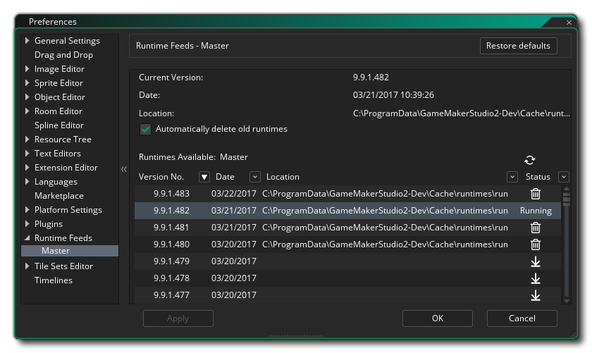

Las preferencias de Runtime Feeds se utilizan para mostrar y cambiar los tiempos de ejecución instalados actualmente, así como el tiempo de ejecución en uso actual. GameMaker Studio 2 puede tener varias herramientas de tiempo de ejecución diferentes instaladas al mismo tiempo y puede establecer cuál usar de esta preferencia. Lo ideal es utilizar el tiempo de ejecución más actualizado, pero a veces puede tener un problema, o se le puede requerir usar uno más antiguo para comparar, etc., y así puede cambiar las herramientas de tiempo de ejecución que GameMaker Studio 2 usa para construir tu juego aquí.
La sección inicial de esta preferencia se relaciona con la ubicación de las herramientas de tiempo de ejecución y requiere que ingrese una URL a una fuente RSS. Luego, esta información se analizará para buscar actualizaciones de las herramientas de tiempo de ejecución que luego se pueden descargar e instalar. Esta sección mostrará la URL de la fuente de tiempo de ejecución maestra de forma predeterminada, pero puede hacer clic en el botón Agregar para crear una nueva fuente de tiempo de ejecución donde debe dar el nombre y la URL para la fuente RSS y luego hacer clic en Aplicar para indicarle a GameMaker Studio 2 que acceda. Deberá cerrar y volver a abrir la ventana de Preferencias para que se muestre el nuevo feed.
Una vez que se ha creado un Feed Runtime, se mostrará en esta sección como una subcategoría, y siempre se debe incluir al menos un feed (de manera predeterminada, este sería el feed maestro). Las opciones de alimentación en tiempo de ejecución se indican a continuación para el Máster, pero serán las mismas para las demás:
Las preferencias de Master Runtime Feed se utilizan para seleccionar, instalar y desinstalar las diferentes herramientas de tiempo de ejecución (esta página también será la misma para cualquier otro tiempo de ejecución que haya agregado). En la parte superior tiene las herramientas de tiempo de ejecución actuales que se utilizan, la fecha en que se creó y la ubicación en la que está almacenado en el disco duro. Debajo de estos detalles, puede encontrar una lista de todos los tiempos de ejecución disponibles, y puede elegir cualquiera de esta lista para pasar a ser el tiempo de ejecución "en ejecución" utilizado para compilar sus proyectos.
Para seleccionar un tiempo de ejecución diferente para usar, simplemente búscalo en la lista y luego haz doble clic
en eso. Si el tiempo de ejecución no se ha descargado e instalado, se le pedirá que lo haga, y una vez que se haya instalado, se le pedirá que cierre y reinicie el IDE para que se pueda inicializar el nuevo tiempo de ejecución.
Esta lista de tiempo de ejecución detalla todos los tiempos de ejecución disponibles, su número de versión, la fecha en que fueron lanzados y, si están instalados, la ruta a donde se han instalado. El lado derecho también muestra los diferentes iconos de estado que son los siguientes:
Esto marca el tiempo de ejecución actual que se ha seleccionado para usarlo en la construcción de sus proyectos. Al hacer clic en esto, se iniciará la descarga e instalación del tiempo de ejecución seleccionado (se mostrará una barra de estado en la parte superior derecha del IDE). Al hacer clic en esto, se eliminará el tiempo de ejecución seleccionado de su disco duro. Puede actualizar la lista de tiempo de ejecución en cualquier momento desde la fuente RSS dada haciendo clic en el botón Actualizar
.